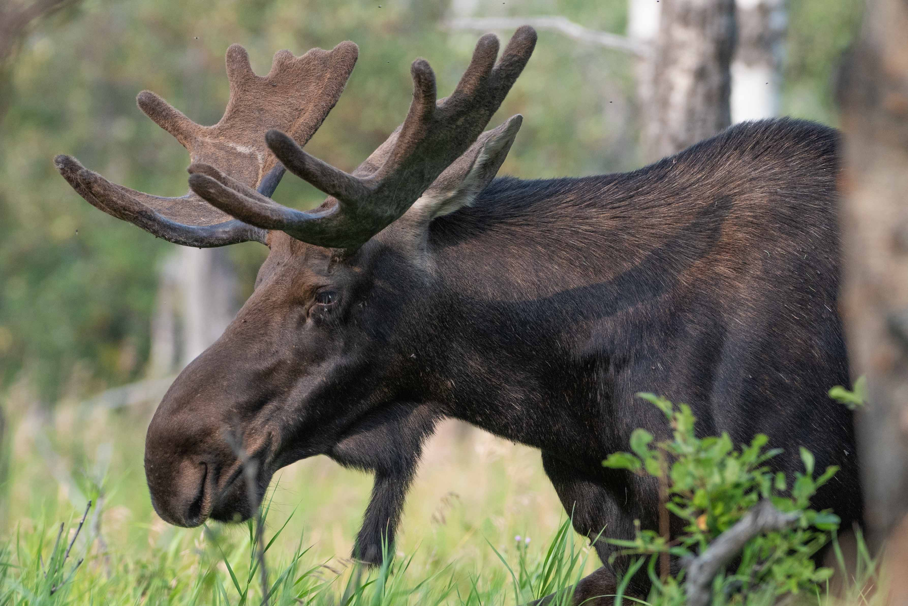

Chocolate Moose

This nontraditional dessert will require a slightly larger refrigerator.
"This is for VERY special occasions only — it takes a lot of effort,
but the presentation is spectacular!"
-ThatBobbieGirl
- 1 Moose
- 40lbs of Hershey chocolate
- 17 tubs of Cool Whip
- 1 Cherry
- Send spouse to Alaska to capture moose, or have one delivered by UPS.
- Meanwhile, melt chocolate in very large double boiler.
- Keep warm.
- Tie up moose with rope.
- Holding the moose by the tail, carefully dip in melted chocolate, covering it completely with a thin coating.
- Arrange moose attractively on large platter and refrigerate for 2 days to set chocolate.
- Remove rope, wash to remove chocolate,if necessary, and return rope to clothesline.
- Garnish chocolate moose with Cool Whip and top with a cherry.
- Serve immediately.
- Or you could just chew on the rope, which may be tastier.
- May be doubled for serving a crowd.